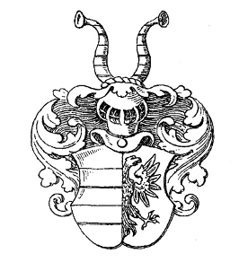

Frälseman. Blev ca 50 år.
omkring 1520 Vä (L).
omkring 1570 Vä (L).
Brun, även Bruun, (av Skåne) var en östdansk adelsätt känd i från 1540 genom Romell (Rasmus) Pedersen Brun (Bruun) till Brunsgård (Brunstorp), belägen i Vä socken, och gift med Bodil Clausdotter Gagge (känd 1540–1606) till Folkestrup.[3] Det har antagits att släkten härstammar från den jylländska ätten Brun af Kongerslev, tidigare benämnt Kongstedlund.